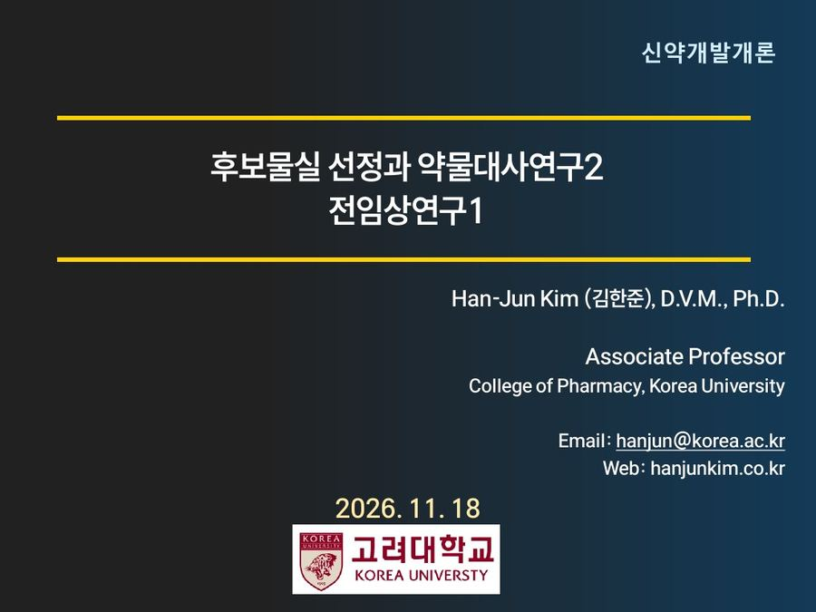
앞부분은 지난 시간 질문 Q&A와 PD 심화(Emax·EC50·내성), 중간은 11주차 PK(ADME) 복습, 뒷부분은 새 단원 Chapter 5. 전임상연구 — 탐색적 vs 규제적 전임상과 GLP야.
“Questions?”(11·49)는 내용이 없어 뺐고, Chapter 4 표지(12)는 지난 시간 요약(13)과 같은 쪽에서 다뤘어.
| 파트 | 슬라이드 | 이 노트 |
|---|---|---|
| Q&A (바이오약·SAR·단백질 결합·Emax) | 2~7·9 | 2~6·8쪽 |
| 약처방 · 내성 시 Emax/EC50 | 8·10 | 7·9쪽 |
| 지난 시간 요약 | 13 | 10쪽 |
| PK 복습 (11주차와 동일) | 14~35 | 11~16쪽 |
| Chapter 5 전임상 · 동물연구 | 36~41 | 17~19쪽 |
| 탐색적 vs 규제적 · GLP | 42~48 | 20~23쪽 |
지난 시간과 연결: 11주차 PD(Emax·EC50·역가·효능)를 Q&A로 더 파고, PK(ADME)를 복습한 뒤 → 후보물질이 정해지면 하는
기말탐색적 vs 규제적 전임상(GLP 적용 여부)과 GLP·QAU의 정의가 이번 단원 1순위.
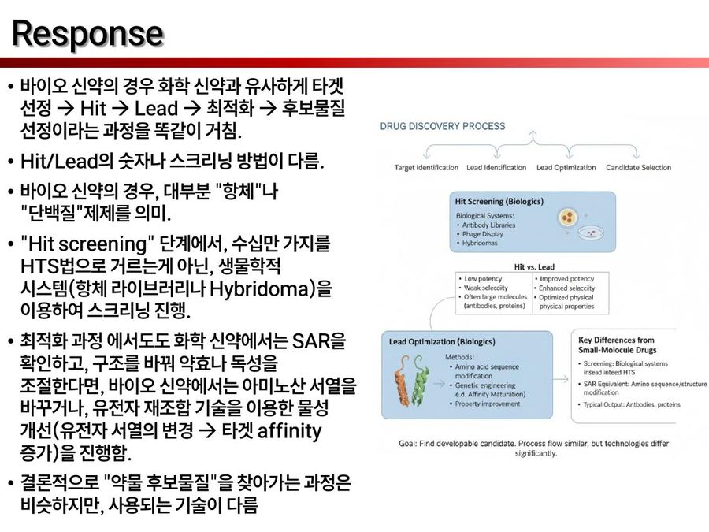
바이오 신약도 타겟→Hit→Lead→최적화→후보물질 과정은 화학신약과 같아. 다만 쓰는 기술이 달라 — 대부분 항체·단백질이고, Hit은 HTS가 아니라 항체 라이브러리·Hybridoma로 거르고, 최적화는 SAR 대신 아미노산 서열·유전자 재조합으로 해.
질문(슬라이드 2 말풍선) 바이오의약품도 화학신약이랑 동일한 과정을 거쳐 신약을 개발하나요?
| 화학 신약 | 바이오 신약 | |
|---|---|---|
| 물질 | 저분자 화합물 | 항체·단백질(고분자) |
| Hit 스크리닝 | HTS(수십만~수백만) | 항체 라이브러리·Hybridoma |
| 최적화 | SAR(구조 변경) | 아미노산 서열·유전자 재조합 |
시험 포인트“바이오약은 과정 자체가 다르다”는 틀린 보기.
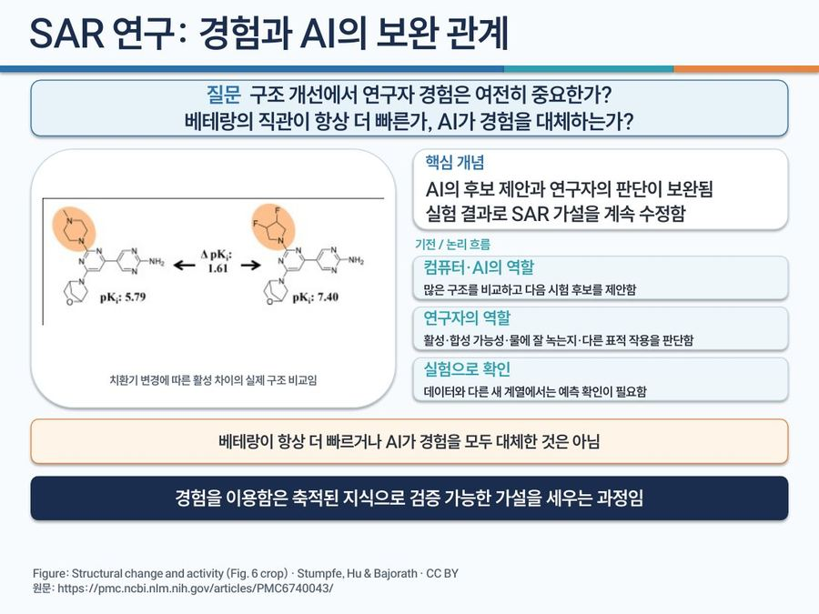
구조 개선에서 연구자 경험과 AI는 보완 관계야. AI가 많은 구조를 비교해 후보를 제안하면, 연구자가 활성·합성 가능성·용해도·다른 표적 작용을 판단해. 베테랑이 항상 빠른 것도, AI가 경험을 다 대체하는 것도 아니야.
질문 구조 개선에서 연구자 경험은 여전히 중요한가? 베테랑 직관이 항상 빠른가, AI가 경험을 대체하는가?
핵심 개념 AI의 후보 제안과 연구자의 판단이 보완됨 · 실험 결과로 SAR 가설을 계속 수정함
그림: 치환기 하나(ΔpKi 1.61)로 활성이 크게 달라지는 실제 구조 비교 — 11주차에서 본 Single-site AC와 같은 예시야.
시험 포인트
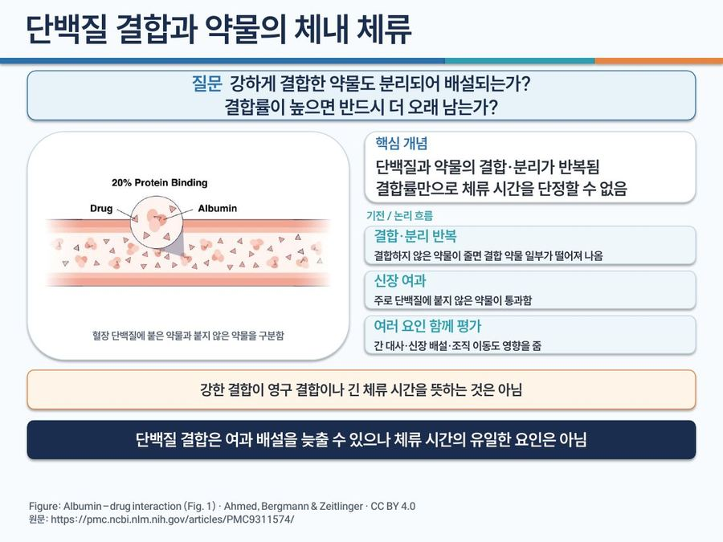
약과 단백질의 결합·분리는 반복돼서, 결합률이 높다고 반드시 오래 남는 건 아니야. 신장은 주로 단백질에 안 붙은(유리) 약물을 거르고, 체류 시간은 간 대사·신장 배설·조직 이동도 함께 좌우해.
질문 강하게 결합한 약물도 분리되어 배설되는가? 결합률이 높으면 반드시 더 오래 남는가?
핵심 개념 단백질과 약물의 결합·분리가 반복됨 · 결합률만으로 체류 시간을 단정할 수 없음
그림(20% Protein Binding): 알부민에 붙은 약물과 붙지 않은(유리) 약물이 혈중에 공존. 유리 약물이 배설·작용하면 결합 약물이 떨어져 나와 보충돼 — 동적 평형.
그래서 단백질 결합은 여과 배설을 늦출 수는 있어도 체류 시간의 유일한 요인은 아니야. 11주차 분포(D)에서 본 “혈장 단백질 결합”의 연장이야.
시험 포인트
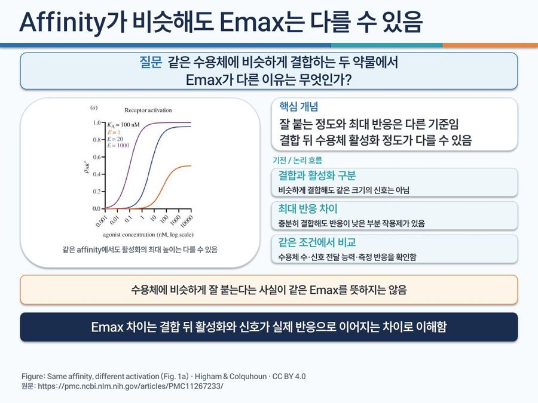
잘 붙는 정도(affinity)와 최대 반응(Emax)은 다른 기준이야. 비슷하게 결합해도 결합 뒤 수용체 활성화 정도가 달라서, 충분히 붙어도 반응이 낮은 부분 작용제가 있어. Emax 차이 = 결합 후 신호가 실제 반응으로 이어지는 차이.
질문 같은 수용체에 비슷하게 결합하는 두 약물에서 Emax가 다른 이유는?
핵심 개념 잘 붙는 정도와 최대 반응은 다른 기준 · 결합 뒤 수용체 활성화 정도가 다를 수 있음
그림(Receptor activation): Kd(결합력)는 같은데 E값(효율 1·20·1000)이 다르면 같은 농도에서도 최종 반응의 천장이 달라져 —
즉 “잘 붙는다(affinity) ≠ 큰 효과(efficacy)”. 11주차 Efficacy/Potency 구분을 수용체 수준에서 설명한 거야.
시험 포인트
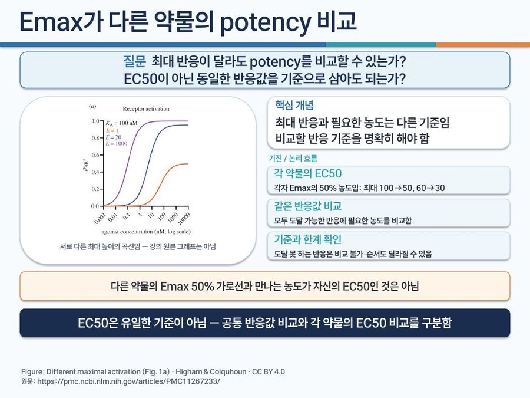
최대 반응이 달라도 potency는 비교할 수 있지만 기준을 명확히 해야 해. 각 약의 EC50은 각자 Emax의 50% 농도(100→50, 60→30)라 서로 기준이 달라. 공통으로 도달 가능한 반응값에서 비교하거나, 각자의 EC50끼리 비교해야 해.
질문 최대 반응이 달라도 potency를 비교할 수 있는가? EC50이 아닌 동일한 반응값을 기준으로 삼아도 되는가?
핵심 개념 최대 반응과 필요한 농도는 다른 기준 · 비교할 반응 기준을 명확히 해야 함
그래프는 서로 다른 최대 높이의 곡선 — 강의 원본 그래프는 아님(설명용).
함정: Emax가 낮은 약(천장 60)의 “50%”는 30인데, 이걸 Emax 100짜리 약의 50%(=50) 가로선과 비교하면 안 돼.
그래서 potency를 비교하려면 ① 두 약 모두 낼 수 있는 공통 반응값에서 필요한 농도를 비교하거나 ② 각자의 EC50끼리 비교 — 둘을 섞으면 안 돼.
시험 포인트
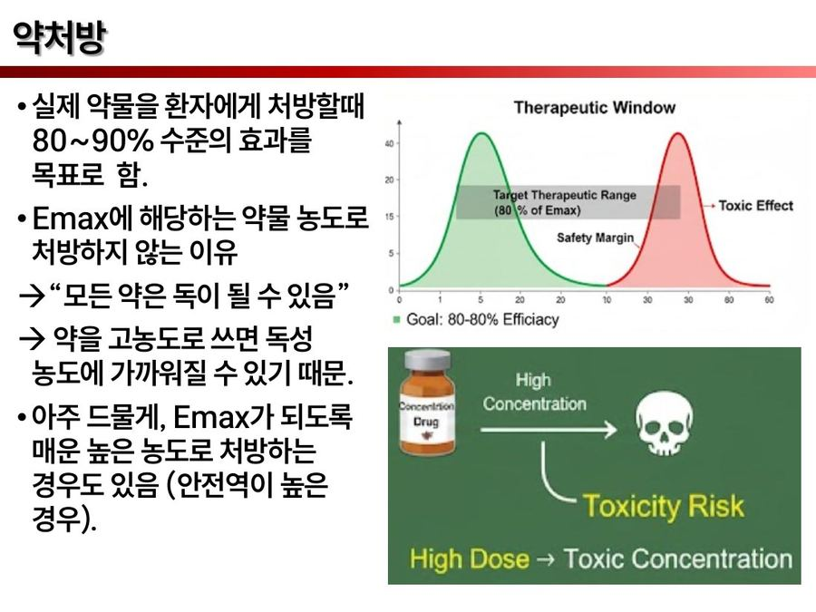
실제 처방은 효과 80~90%를 목표로 하고 Emax 농도로는 안 써. “모든 약은 독” — 고농도로 쓰면 독성 농도에 가까워지기 때문이야. 안전역(치료 창)이 아주 넓은 약만 드물게 Emax 수준으로 써.
그림(Therapeutic Window): 치료 효과 곡선(초록)과 독성 효과 곡선(빨강) 사이의 Target Therapeutic Range = Emax의 80% 부근. 더 올리면 독성 곡선(빨강)에 겹쳐.
11주차 TD50·LD50·TI(치료 창)와 바로 연결 —
기말
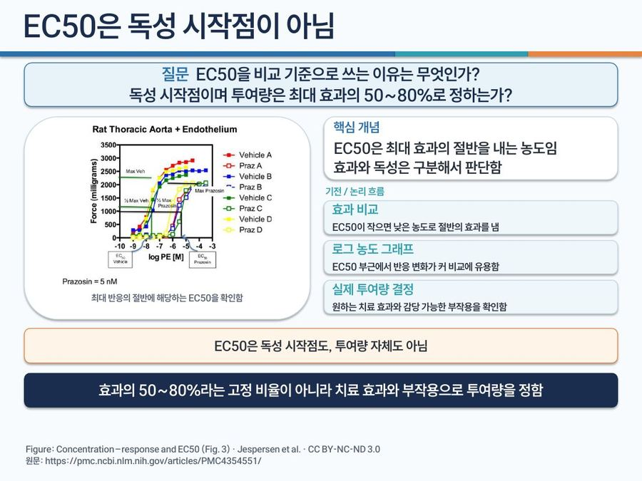
EC50은 최대 효과의 절반을 내는 농도일 뿐, 독성 시작점도 투여량 자체도 아니야. 효과와 독성은 구분해서 봐. 투여량은 “효과의 50~80%”라는 고정 비율이 아니라 원하는 치료 효과와 감당 가능한 부작용으로 정해.
질문 EC50을 비교 기준으로 쓰는 이유는? 독성 시작점이며 투여량은 최대 효과의 50~80%로 정하는가?
핵심 개념 EC50은 최대 효과의 절반을 내는 농도 · 효과와 독성은 구분해서 판단
그림(Prazosin 5 nM): 로그 농도 그래프에서 EC50 부근 기울기가 가장 가팔라 — 그래서 약끼리 역가 비교의 기준점으로 EC50을 써. 하지만 그게 독성이 시작되는 농도는 아니야.
두 가지 흔한 오해를 콕 짚는 슬라이드야:
기말EC50 = 효능의 절반 농도·역가 지표. 독성 시작점도 투여량도 아님. 투여량은 효과↔부작용 균형으로 결정.
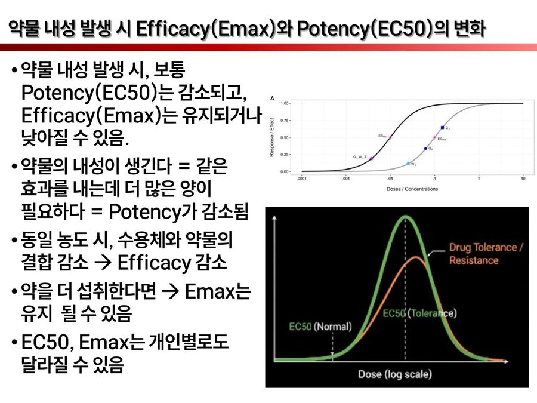
약물 내성이 생기면 보통 Potency(EC50)는 감소(= 같은 효과에 더 많은 양 필요)하고, Efficacy(Emax)는 유지되거나 낮아져. 더 많이 투여하면 Emax는 유지될 수 있어. EC50·Emax는 개인별로도 달라.
그림: 내성(Tolerance) 곡선이 정상(Normal)보다 오른쪽으로 이동 → 같은 반응을 내려면 더 높은 농도 필요(EC50↑ = 역가↓). 천장(Emax)은 비슷하거나 약간 낮아짐.
“역가 감소 = 곡선 오른쪽 이동”은 11주차 Potency(왼쪽일수록 고역가)의 반대 방향이야. 내성 = 역가가 떨어지는 쪽으로 밀리는 것.
기말
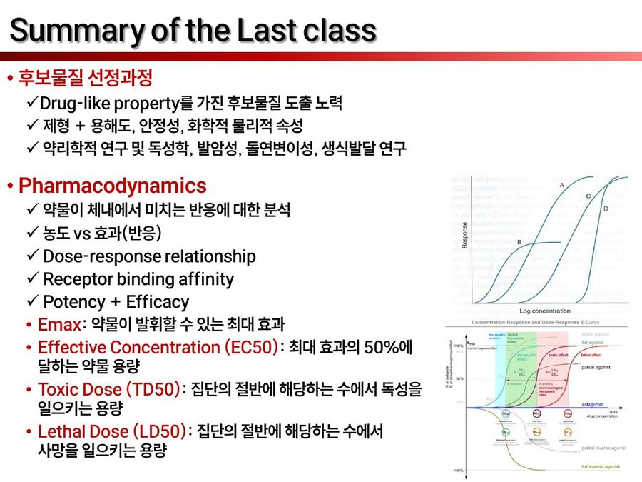
지난 시간(11주차)을 한 장으로 정리한 슬라이드. 후보물질 선정(Drug-like 속성·독성 연구)과 PD(용량-반응, 역가·효능, Emax·EC50·TD50·LD50)의 핵심어 복습이야.
후보물질 선정과정
Pharmacodynamics
이 한 장이 2~10쪽 Q&A·심화의 전제야. 특히 Emax·EC50·TD50·LD50 정의를 다시 확인해 두면, 앞의 “EC50은 독성 시작점이 아니다”, “내성 시 변화” 같은 함정이 잘 풀려.
슬라이드 11은 “Questions?”, 12는 Chapter 4 표지(PK vs PD 손그림)야. 다음 쪽(11주차 복습)부터는 PK(ADME)로 넘어가.
기말PD 4대 지표(Emax·EC50·TD50·LD50)는 정의 그대로 단답·객관식에 나와. TD50/ED50 = 치료계수(TI).
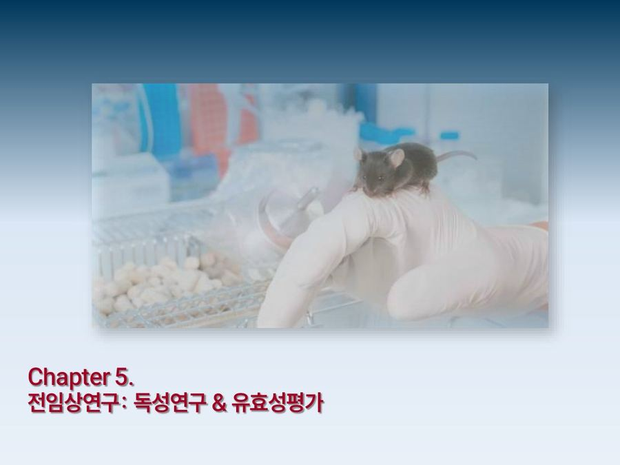
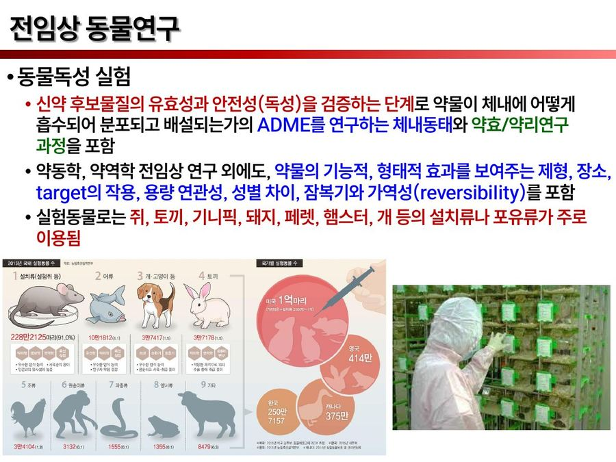
새 단원 Chapter 5. 전임상연구(독성연구 & 유효성평가). 후보물질의 유효성·안전성(독성)을 동물에서 검증하는 단계로, ADME 체내동태와 약효/약리 연구를 포함해. 쥐·토끼·개 등 설치류·포유류를 주로 써.
36 Chapter 5. 전임상연구: 독성연구 & 유효성평가 (표지)
37 전임상 동물연구 — 동물독성 실험
전임상연구가 보는 두 축:
둘 다 몸속 거동(ADME)을 알아야 해석돼 — 그래서 앞의 PK 복습(14~35)이 이 단원의 전제야.
기말전임상 =
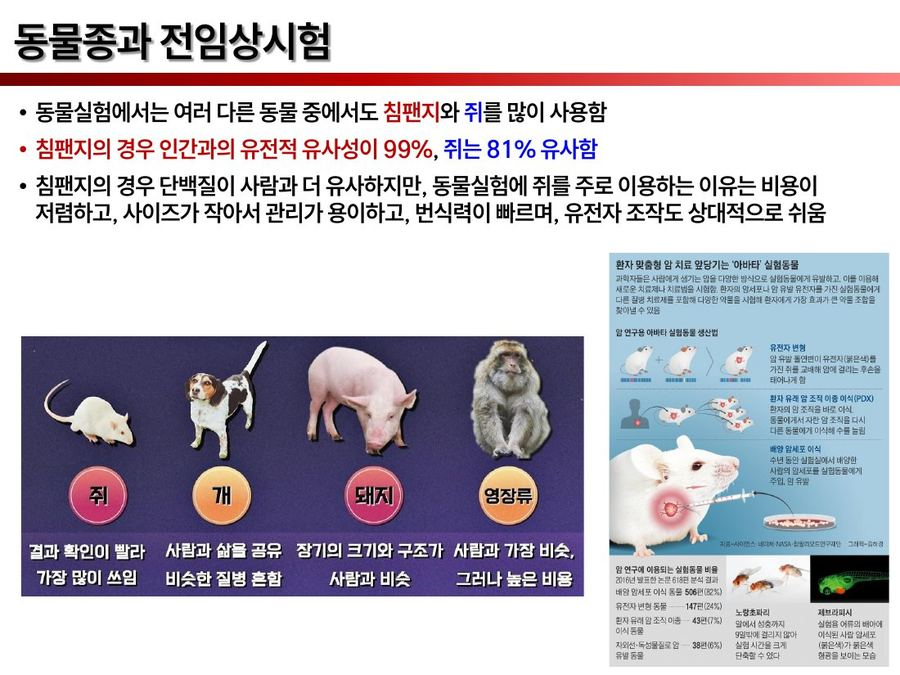
사람과의 유전적 유사성은 침팬지 99% > 쥐 81%라 침팬지 단백질이 더 비슷해. 그런데도 쥐를 주로 쓰는 이유는 비용이 싸고, 작아서 관리가 쉽고, 번식이 빠르고, 유전자 조작이 상대적으로 쉽기 때문이야.
슬라이드 그림의 동물별 특징:
| 동물 | 특징 |
|---|---|
| 쥐 | 결과 확인 빠름·가장 많이 쓰임 |
| 개 | 사람과 삶 공유·비슷한 질병 |
| 돼지 | 장기 크기·구조가 사람과 비슷 |
| 영장류 | 사람과 가장 비슷·그러나 높은 비용 |
기말
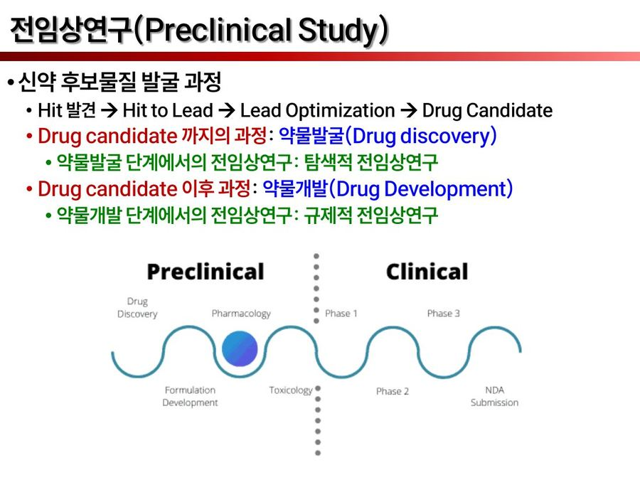
전임상연구는 Drug Candidate를 기준으로 둘로 나뉘어. 후보물질 이전(약물발굴, Drug Discovery)은 탐색적 전임상, 후보물질 이후(약물개발, Drug Development)는 규제적 전임상이야.
신약 후보물질 발굴 과정: Hit 발견 → Hit to Lead → Lead Optimization → Drug Candidate
39 그림: Drug Discovery→Pharmacology→Toxicology→임상 흐름. 40: 줄기세포 파킨슨 치료제 전임상 예시(쥐 50~100마리/군 → 영장류 10~20마리/군). 41: 평가 → PoC → 예비 안전성(GLP) → 확정 안전성(GLP/GMP) → IND.
경계선은 Drug Candidate가 정해지는 순간이야. 그 전은 “어떤 후보가 될까” 탐색이라 자유롭고, 그 후는 “이 후보를 허가받자”라 규칙(GLP)을 따라야 해.
| 구분 | 탐색적 | 규제적 |
|---|---|---|
| 시점 | 후보물질 이전(발굴) | 후보물질 이후(개발) |
| 목적 | 후보 탐색·방향 결정 | 허가용 독성 용량 규명 |
기말
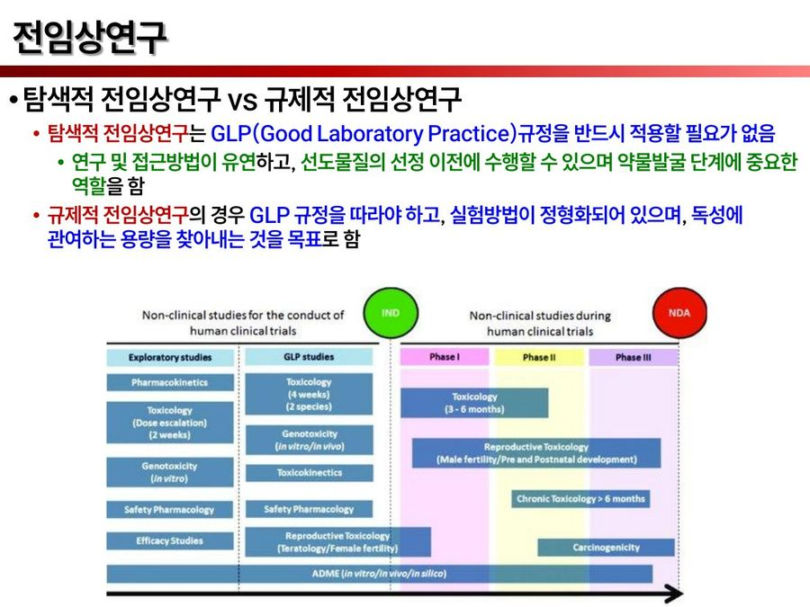
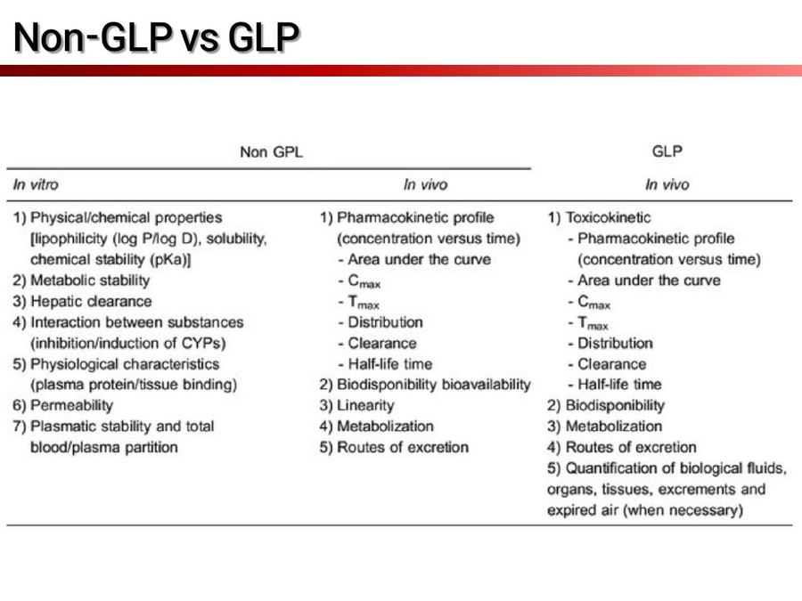
탐색적 전임상은 GLP를 반드시 적용할 필요가 없어(유연, 선도물질 선정 이전 가능). 규제적 전임상은 GLP를 따라야 하고 실험방법이 정형화돼 있으며, 독성에 관여하는 용량을 찾는 것이 목표야.
43 그림(Non-GLP vs GLP): Non-GLP는 in vitro 물성·대사안정성·CYP 등, GLP는 in vivo 독성동태(Cmax·Tmax·AUC·반감기)까지 정형화.
42 그림: IND(임상 전)까지의 Exploratory studies와 그 뒤 임상(Phase I~III)과 함께 가는 GLP studies(Toxicology·Genotoxicity·생식독성·발암성)로 나뉨.
핵심 한 줄:
기말
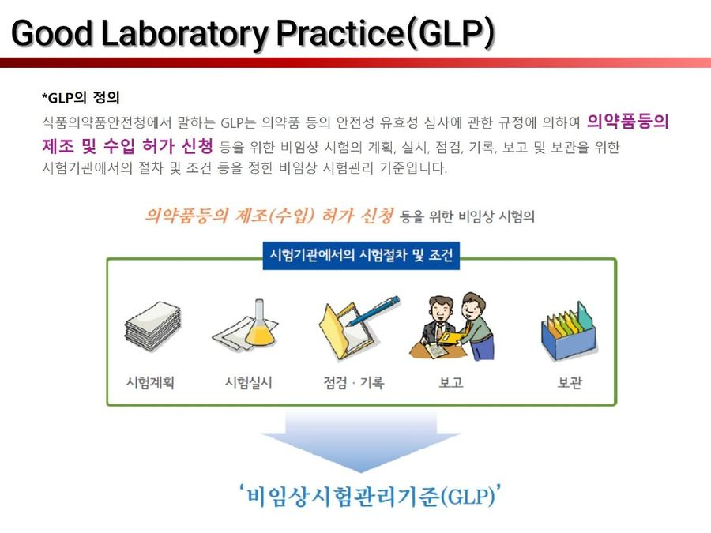
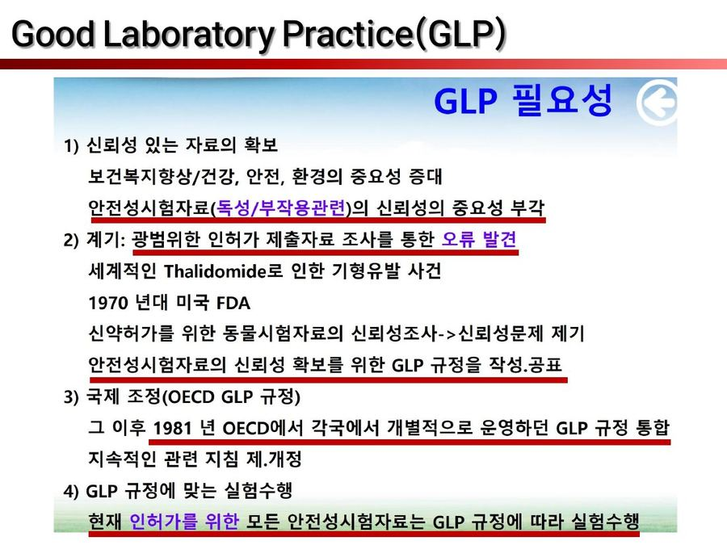
GLP = 비임상시험 관리기준이야. 의약품 제조·수입 허가 신청을 위한 비임상 시험의 계획·실시·점검·기록·보고·보관 절차를 정한 거야. 탈리도마이드 기형유발 사건으로 시험자료 신뢰성 문제가 불거져 만들어졌고, 1981년 OECD가 국제 통합했어.
44 GLP의 정의: 식약처가 말하는 GLP = 의약품 등 안전성·유효성 심사 규정에 따라 제조·수입 허가 신청 등을 위한 비임상 시험의 계획·실시·점검·기록·보고·보관 절차·조건을 정한
45 GLP 필요성
GLP는 “결과가 좋게 나오게” 하는 게 아니라
역사 포인트: 탈리도마이드(동물시험 신뢰성 문제) → FDA·OECD가 규정 마련·통합(1981). 중간고사 역사 파트와도 연결돼.
기말
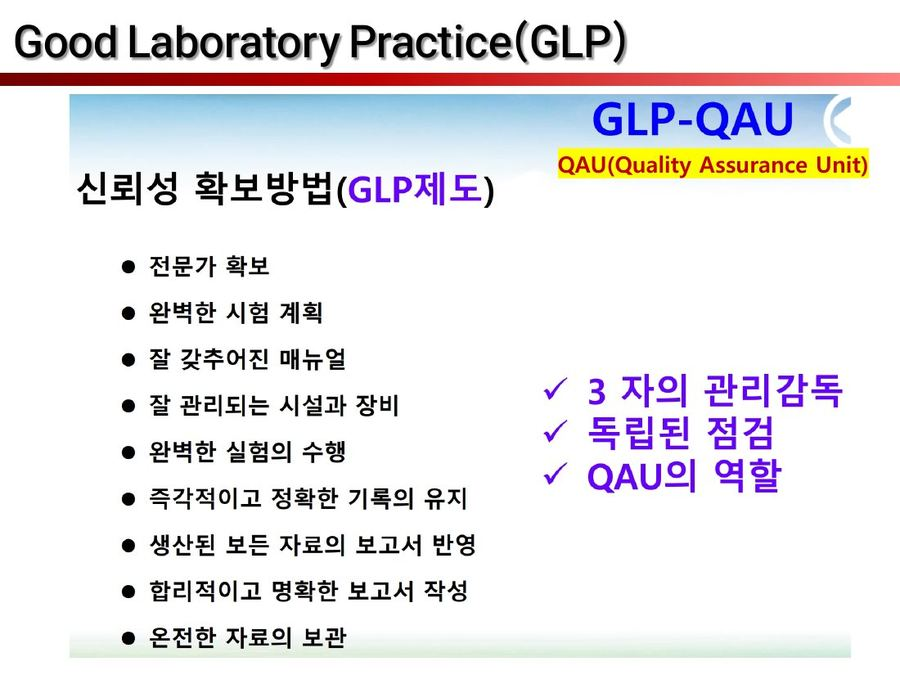
GLP가 신뢰성을 확보하는 방법 = 전문가·완벽한 계획·매뉴얼·관리되는 시설·정확한 기록·온전한 보관. 핵심 장치는 QAU(Quality Assurance Unit, 품질보증부서)로, 시험팀과 독립된 제3자가 관리·감독·점검해.
신뢰성 확보방법(GLP 제도)
QAU (Quality Assurance Unit, 품질보증부서)
QAU가 핵심인 이유: 시험을 수행하는 사람이 자기 시험을 스스로 “잘했다”고 하면 못 믿어. 그래서
다음 쪽(47) GLP 흐름에서도 QA 점검이 시험 개시·실시·보고 각 단계에 들어가는 걸 볼 수 있어.
기말
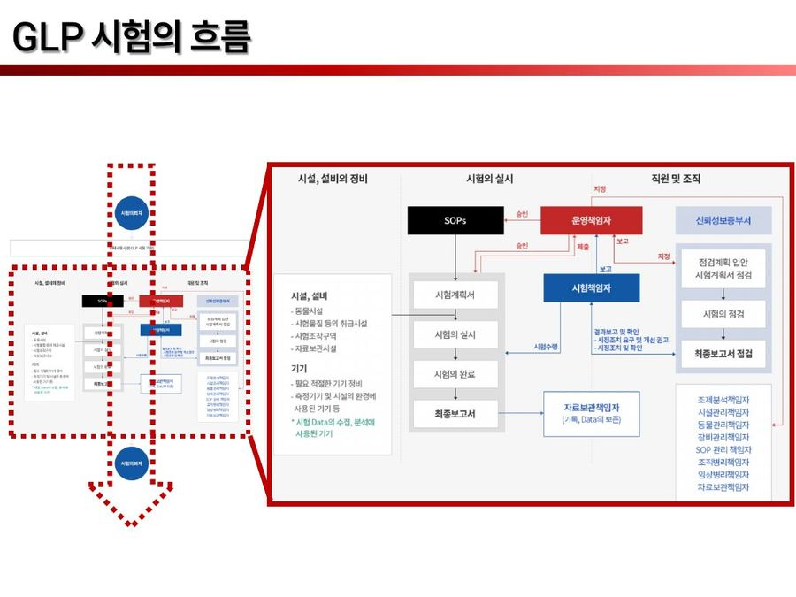
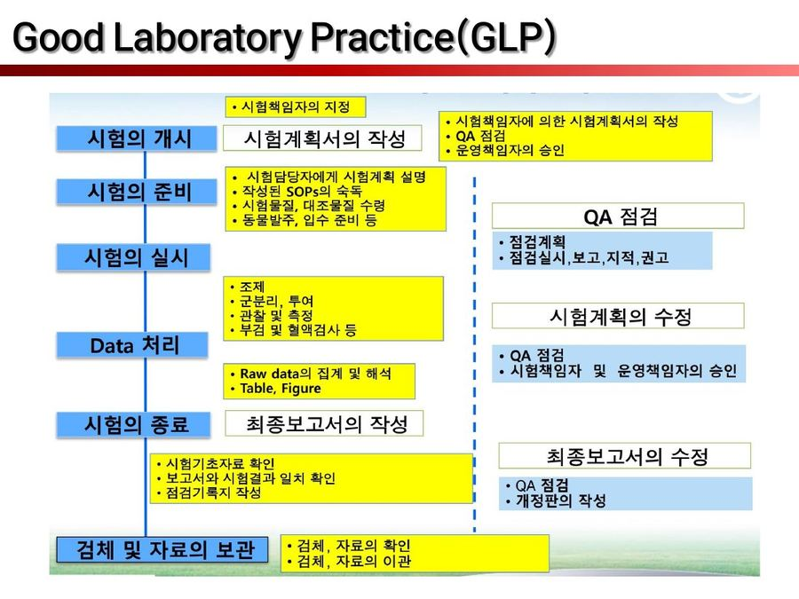
GLP 시험은 개시 → 준비 → 실시 → Data 처리 → 종료 → 검체·자료 보관 순서로 가. 각 단계에 SOP·시험책임자·운영책임자가 관여하고, 옆에서 QA 점검이 병행돼. 끝에 최종보고서를 쓰고 검체·자료를 보관해.
GLP 시험 단계 (48 — 왼쪽 흐름 + 오른쪽 QA)
48의 오른쪽 축이 QA 점검 라인이야: 점검계획 → 점검 실시·보고·지적·권고 → 시험계획/최종보고서 수정 승인.
47 조직도: 운영책임자·시험책임자·신뢰성보증부서(QAU)·자료보관책임자(기록·Data 보존)가 분리돼 서로 견제해. (48이 왼쪽의 개시→보관 흐름도)
기말순서